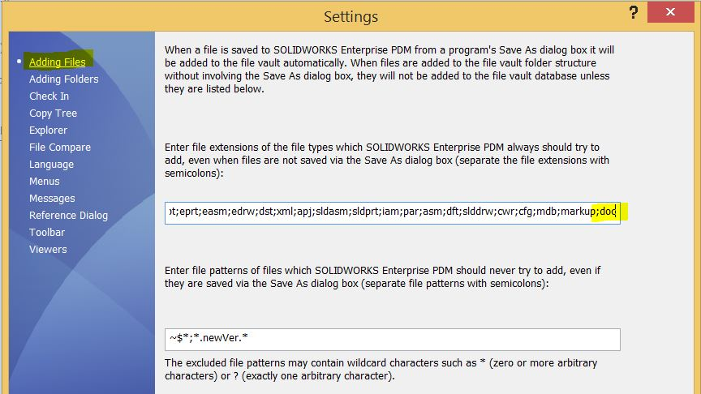

When you choose PDMPublisher from the dropdown in the new task dialog, you will be prompted with a window similar to the one below:

Options Setup Page

Output
| Option | Description |
|---|---|
| Export Location | Location where to export the files. The location can be within or outside the vault. It is important that the path does not end with a backslash (\). |
| Extension-specific Location... | Opens a dialog that allows you to customize the export location for each selected output extension independently. |
| Filename | Filename of the exported file. You do not need to include the extension. |
| File Formats | Specifies the available file formats to export documents to, including formats such as PDF, DWG, DXF, U3D, IGS, STL, STEP, EPRT, EASM, HTML, X_T, 3MF, IFC, and _3DPDF. |
| create reference from dest file to source file | Creates a reference from the exported destination file to the source file. |
| Use @ Tab to Evaluate Paths. | Uses the @ configuration tab to evaluate variables in the export location and filename. |
Duplicating Handling
| Option | Description |
|---|---|
| Delete duplicates outside the destination folder | Deletes duplicate files that exist outside the destination folder. |
Export
| Option | Description |
|---|---|
| Merge exported PDFs into one master PDF | Combines all exported PDFs of the affected assembly into one master PDF file instead of keeping them separate. |
| Ignore sub-assemblies children when condition checks fail | When enabled, the children of sub-assemblies that fail the condition check will be ignored and not processed. |
| Export affected document | Exports the affected top-level document. |
| Export references to file formats individually | When enabled, references of the active document are exported individually to the selected file formats. This does not affect merging or archiving when disabled. |
| Work with latest version | Ensures that the task works with the latest version of the file by retrieving the newest version from the vault before processing. |
| Quick view mode (Drawings Only) | Opens drawings in Quick View mode to improve performance, especially for larger drawings. |
| Use Microsoft Print To PDF to save PDFs | Uses Microsoft Print to PDF when generating PDF output. |
| Convert multiple configurations | If enabled, the task will attempt to export all part and assembly configurations. The configurations will be saved with the configuration name appended to the filename. |
| Configuration Filter | Allows the user to control which configurations are processed. * is a wildcard that matches any sequence of characters. Additionally, the user can exclude specified configurations. |
| Map variables between source and destination file | Enables mapping of variables between the source file and the exported destination file. |
| Variable Mapping... | Opens the variable mapping dialog where source and destination variables can be configured. |
| Ask user to select configuration on startup | If enabled, the task will prompt the user to select which configuration of the affected document to process on startup. |
| Archive all exported documents (.zip) | Packages all exported documents into a single .zip file for easy storage and distribution. |
| Export sheet metal parts to 1:1 flat pattern DXF | Exports sheet metal parts as DXF files in a 1:1 scale. |
| Flat Pattern Settings | Opens a dialog to configure how the flat pattern DXF is created. |
| Use search to locate drawings | When enabled, the task will search in the vault for the first drawing that references the affected document when a matching drawing cannot be found in the same folder. |
File Explorer Right-Click Menu
This section has one setting that hides the task name from appearing under Tasks in the right-click menu in File Explorer. This allows PDM administrators to hide the task from users while still allowing it to run from a workflow transition:

Flat Pattern Settings
When Export sheet metal parts to 1:1 flat pattern DXF is enabled, the Flat Pattern Settings dialog provides the following options:
- Export flat-pattern geometry: Exports the flattened part geometry.
- Include hidden edges: Adds hidden edges to the exported geometry.
- Export bend lines: Adds bend lines to the flat pattern.
- Include sketches: Exports sketches to the DXF.
- Merge coplanar faces: Merges adjacent faces lying in the same plane.
- Export library features
- Export forming tools
- Export bounding box: Adds a bounding box around the flattened part geometry.
- Only export the inner diameter of countersink holes: This only works with countersinks created using the Hole Feature.
- Append
FlatPatternto the flat pattern DXF file name: Helps avoid overwriting files when a.SLDDRWfile is also exported to DXF.
Export History
| Option | Description |
|---|---|
| Turn on activity tracking | Enables tracking of all task activity and generates a detailed log file documenting each step performed by the task. |
| Server-Synced Activity Logs | Sends activity logs to the server for centralized storage and review. |
| Log Folder (Vault Only) | Specifies the folder in the PDM vault where the task log files will be stored. This path must be inside the vault and must not end with a backslash (\). |
BOM
| Option | Description |
|---|---|
| Template | Specifies the BOM template to be used. Users can select from the available BOM layouts in the vault. |
| Calculation method | Defines how the BOM is calculated. Options include As Built and Latest. |
Calculation Methods
| Method | Description |
|---|---|
| As Built | Same references when the assembly was checked in. |
| Latest | Latest references of the assembly. |
[!IMPORTANT] Why does PDMPublisher use BOM layouts? PDMPublisher uses the BOM layouts to calculate the quantities in case they are in the printed pdf as a custom annotation.
Table of Content
| Option | Description |
|---|---|
| Add table of content to merged PDF | When enabled, a table of contents is automatically generated and inserted into the merged PDF, making it easier to navigate and reference the document. |
| Table columns | Specifies the information included in the table of contents. Available options are Just Name, Name and Quantity, and Custom. |
| Customize Table... | Opens a dialog that allows you to choose the custom columns to include in the table of contents. |
SOLIDWORKS
| Option | Description |
|---|---|
| Use this version of SOLIDWORKS | Specifies which version of SOLIDWORKS to use for processing the files. Options range from specific years to the latest available version. |
PDF bookmarks
| Option | Description |
|---|---|
| PDF bookmarks | Allows you to define the text pattern for the bookmarks section in the merged PDF, making it easier to navigate between sections within the document. |
Ensuring Proper BOM Layout for PDMPublisher
In recent versions, PDMPublisher uses the PDM BOM instead of the SOLIDWORKS BOM. PDMPublisher leverages the first BOM layout in your vault to calculate quantities.
To ensure proper functionality, the layout must include:
<RefCount>for the quantity<Configuration>for the configuration name
If you are experiencing BOM-related errors, verify that these required columns are present in your BOM setup.
Tip
We recommend disabling the auto-add extensions by removing all the extensions the task uses, including txt.
This helps prevent race conditions between SOLIDWORKS PDM and the task during the file add process.
To change the auto-add extensions list:
- Go to the PDM Administration tool
- Right-click on the username, or All Users
- Select Settings
- Click on Adding Files
- Edit the file extensions list
